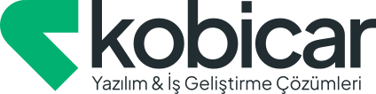

KobiCar için hazırladığımız üç farklı görsel yön, her birinde hazır gönderi, hikâye ve Reels kapağı tasarımı; arkasında 30 günlük içerik takvimi. Beğendiğiniz yönü seçin, ilk ay bu çizgide ilerleyelim.
Bu çalışmalar örnektir, gerçek içeriklerde sizin görselleriniz kullanılır. Gösterilen fotoğraflar yapay zekâ ile üretilmiş sahne örnekleridir; KobiCar logosu yalnızca yerleşim önizlemesi içindir.
Herkese açık kaynaklardan derlenen özet. Erişemediğimiz bilgiler “belirsiz” olarak işaretlidir; hesap içi veriler (erişim, etkileşim) görüşmede birlikte netleşir.
İkinci el araç değerleme, CRM, bayi yönetimi (DMS), ön muhasebe, web sitesi ve pazarlama modülleri. Kurucu: Uğur Yeşbek. LinkedIn’de 11–50 çalışan, İstanbul. Başarı hikâyeleri: OtoDeğer, TrinkCars, OtoFly, OtoVakit, OtoBerco, AydCars.
İkinci el galeriler, bayiler, ekspertiz noktaları, filo ve araç alım şirketleri. Karar verici çoğunlukla galeri sahibi: hızlı, sade ve sahadan konuşan içerikle ikna olur.
Wind Medya (otomotiv CRM), MobilGaleri, Otomologs, GaleriTakipPro, OCCO Car, Gelecek Yazılım, otogaleriprogrami.com. Çoğu özellik listesi anlatıyor; sahadan hikâye ve tutarlı sosyal medya çizgisi az.
Yaklaşık 147 takipçi, 1 takip. Görünen son 11 gönderi 25–27 Eylül 2026’da, üç güne yığılmış; 10’u çoklu görsel (carousel). Reels ve düzenli ritim görünmüyor. Hikâye/öne çıkanlar: belirsiz.
Sayfa mevcut, açıklama kısa tanıtım metni. Takipçi sayısı, paylaşım sıklığı ve son gönderiler: belirsiz (herkese açık veri alınamadı).
Yaklaşık 4 takipçi, 3 çalışan profili bağlı. Son paylaşım “Gelen Kutusu” ürün anlatımı; dil iyi ama erişim çok düşük.
Kaynaklar: kobicar.com · lp.kobicar.com · LinkedIn şirket sayfası · Instagram · Facebook · rakipler: windmedya.com, mobilgaleri.com, otomologs.com, galeritakippro.com, occocar.com, gelecekyazilim.com.tr. Takipçi sayıları anlık değişir.
Web sitenizdeki koyu + yeşil kimliğin sosyal medyaya taşınmış hâli. Teknolojik, güven veren, kurumsal. Başlıklar kısa ve iddialı; fotoğraflar koyu tonla bütünleşir.
Yazılım değil, galerici esnafıyla konuşan insani bir ton. Krem zemin, sıcak fotoğraf, serif başlık. Ürünü değil günlük işi anlatır; güven “bizden biri” hissiyle kurulur.
Dev yazılar, sarı vurgu, siyah çerçeve: kaydırırken duran, hızlı okunan, paylaşılabilir bilgi kartları. Fotoğrafa az bağımlı, üretimi hızlı, aylık hacim artırmaya en uygun yön.
Seçilen yöne göre tasarlanır. Her satırda kanal, format, konu, metin taslağı ve etiketler var. Facebook + Instagram ana kanal; LinkedIn ek kanal olarak işaretli.
| Gün | Kanal | Format | Konu | Metin taslağı |
|---|
Facebook + Instagram için, 1080×1350 ve 1080×1080; metinleriyle birlikte.
Anket, soru kutusu, duyuru ve “bugün” formatları.
Kapak tasarımı, senaryo ve altyazı metni; çekim sizden veya ekran kaydından.
Ay başı onay takvimi, ay sonu sade rapor ve bir sonraki ay önerisi.
Başlangıç: yön seçimi ve hesap erişimi sonrası ilk içerik paketi kısa sürede onaya sunulur. Kapsam, görüşmede ihtiyaca göre ayarlanır.